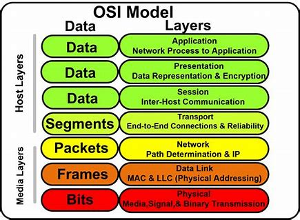
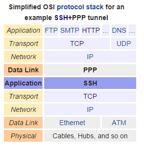
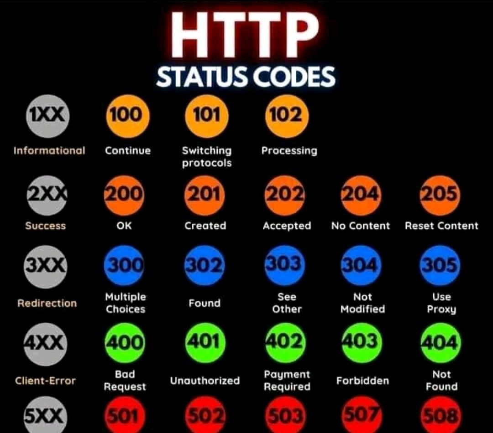
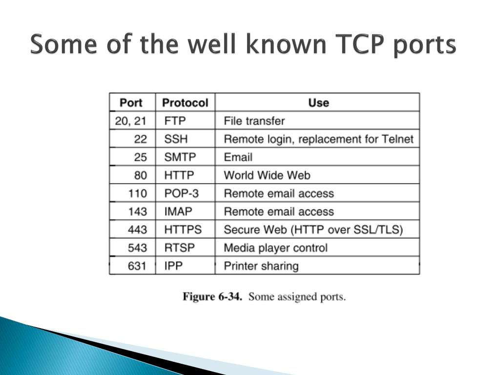
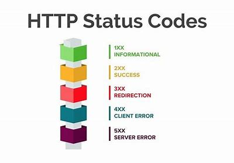
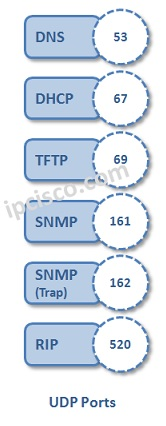
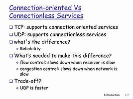

ISO Organization and Layered Architecture
ISO Organization
The
International Organization for Standardization (ISO)
is an independent body that develops and publishes international standards.
ISO aims to ensure quality, safety, and efficiency across various sectors.
Standards help facilitate international trade and promote collaboration.
The Model-Layered Architecture
The
layered architecture
model organizes network protocols into layers, each serving specific functions.
This structure simplifies network design and troubleshooting by dividing responsibilities.
Common layered models include the
OSI model
and the
TCP/IP model
.
Functions of Layers
Each layer in the architecture has specific responsibilities, such as data encapsulation, addressing, and error handling.
Layers interact with each other through well-defined interfaces, ensuring data flows smoothly through the network.
This separation of functions allows for modular development and easier updates.
Different Types of Layers
Common types of layers in network architecture include:
Physical Layer
: Deals with the physical connection and transmission of raw data over a medium.
Data Link Layer
: Provides error detection and correction, as well as framing for data packets.
Network Layer
: Responsible for routing data across the network and managing addressing.
Transport Layer
: Ensures reliable data transfer and flow control between end systems.
Session Layer
: Manages sessions and controls the dialogue between applications.
Presentation Layer
: Translates data formats and ensures data is in a usable format for the application layer.
Application Layer
: Interfaces with end-user applications and provides network services.
Session Layer
The
Session Layer
establishes, maintains, and terminates connections between applications.
It manages the exchange of information and keeps track of the session state.
Transport Layer
The
Transport Layer
ensures reliable data transfer and segmentation of data into manageable packets.
Protocols like
TCP
(Transmission Control Protocol) and
UDP
(User Datagram Protocol) operate at this layer.
Application Layer
The
Application Layer
provides network services directly to user applications, such as web browsers and email clients.
It supports various protocols, including
HTTP
,
FTP
, and
SMTP
.
      